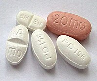

Периодически беспокоит запор. К врачу попасть сложно, да и кажется, что запор может пройти, если употреблять определенные продукты. Читал, что надо есть свеклу и чернослив, но мне такая диета особо не помогает. Знакомые советуют слабительные, но где-то слышал, что часто использовать их нельзя.
Так что же делать и есть ли специальная диета, которая избавит от этого недуга?
Запор — одна из самых частых жалоб, связанных с пищеварением, у людей в странах Запада и в России. Запор может быть самостоятельным заболеванием , но в большинстве случаев это следствие изменений в образе жизни или симптом других болезней.
Нет универсальной диеты, которая гарантировала бы всем без исключения отсутствие запоров до конца жизни. Однако кое-что в образе жизни есть смысл изменить, если хотите сталкиваться с ними как можно реже.
Наши статьи написаны с любовью к доказательной медицине. Мы ссылаемся на авторитетные источники и ходим за комментариями к докторам с хорошей репутацией. Но помните: ответственность за ваше здоровье лежит на вас и на лечащем враче. Мы не выписываем рецептов, мы даем рекомендации. Полагаться на нашу точку зрения или нет — решать вам.
Современная медицина определяет запор как совокупность таких симптомов:
Могут иметь место не все симптомы, но один симптом без других жалоб не обязательно расценивать как запор.
люди опорожняют кишечник по-разному, и только вы можете оценить, что для вас нормально, а что вызывает беспокойство. Главный фактор — изменение обычной ситуации со стулом. Не ориентируйтесь на других: некоторое люди опорожняют кишечник всего трижды в неделю и при этом абсолютно здоровы. Но если на протяжении многих лет для вас норма — ежедневный туалет, то три дефекации в неделю — повод посмотреть на ситуацию повнимательнее.
Определить, почему у вас возник запор, сможет только врач. В большинстве случаев это происходит из-за изменений в образе жизни или приема медикаментов. Например, вы стали меньше двигаться, есть меньше овощей, принимать обезболивающие или добавки с железом.
Если нарушения стула беспокоят регулярно в течение трех месяцев, то запор считается хроническим. Такое бывает из-за нарушения моторики толстой кишки или координации мышц, которые отвечают за дефекацию. То есть нарушается процесс передачи сигналов о необходимости покакать или кал движется по кишечнику слишком медленно, хотя каких-либо анатомических аномалий нет.
Иногда запор — симптом другого заболевания: диабета, гипотиреоза, рака толстой или прямой кишки. Поэтому даже если запоры проходят сами по себе или после слабительного, но имеют тенденцию повторяться, лучше обсудить это с врачом — гастроэнтерологом или терапевтом.
Также имеет смысл обратиться к врачу при запоре, если у кого-то из родственников уже обнаруживали рак прямой или толстой кишки.
Еще есть «красные флаги» — симптомы, при проявлении которых ехать к специалисту нужно как можно скорее:
Расскажем в рассылке «Это норма». Дважды в месяц присылаем письма о том, как проверять назначение, выбирать качественное лекарство из дюжины аналогов и возвращать деньги за лечение
Если проблема есть, ее нужно решить со специалистом: безопасного обходного пути нет. Чтобы избежать неловкости и неприятных ощущений, советую поискать современного врача с должным уровнем квалификации.
Если пойдете в поликлинику по ОМС, талончик нужно брать к терапевту. Он может самостоятельно назначить лечение либо дать направление к гастроэнтерологу, если ваша ситуация будет для него неоднозначной. Если идете по полису ДМС или в частную клинику, можете сразу записываться к гастроэнтерологу: это более узкий специалист по теме запора.
Запором также занимается врач-проктолог, но он лечит только болезни прямой кишки. Они тоже могут стать причиной запора, но чаще он возникает из-за неполадок в работе желудочно-кишечного тракта «выше по течению». Поэтому при самостоятельном обращении к узкому специалисту логичнее начинать с консультации гастроэнтеролога.
Часто, чтобы подтвердить диагноз «запор» и определить его причины, врач спросит о симптомах и оценит ваше общее состояние. Обратит внимание на вздутие живота, боли при его ощупывании, слабость, похудение.
Иногда нужны дополнительные обследования. Например, врачу может потребоваться ощупать вашу прямую кишку пальцем в перчатке. Он может назначить анализ кала на скрытую кровь, чтобы исключить некоторые заболевания.
В редких случаях врач может порекомендовать обследование с помощью гибкого зонда, чтобы осмотреть либо только нижнюю часть, либо всю толстую кишку. Эти процедуры называются ректороманоскопией и колоноскопией. Такие методы нужны в случаях, когда здоровье пациента под угрозой, а никаких типичных объяснений причин ухудшения состояния нет.
Курс о том, как выбирать медицинские услуги, лекарства и страховку, чтобы не терять деньги
Современные западные и российские рекомендации включают в качестве консервативного лечения повышение физической активности, изменение рациона и прием слабительных средств.
Физическая активность. Сидячий образ жизни увеличивает риск запора, поэтому ученые рекомендуют двигаться хотя бы 150 минут в неделю. Речь не только про спортивные упражнения, но и про обычные действия: дойти до машины, сходить за кофе, вымыть пол или позаниматься йогой. Пять прогулок в неделю по полчаса — и норма выполнена. Выглядит не так уж грозно.
Изменение рациона. Врачи рекомендуют людям с запором увеличить количество жидкости и клетчатки в рационе. Клетчатка — это волокна растительной пищи, они задерживают воду в кишечнике и делают его содержимое мягким и объемным. Такой массе легче выйти наружу. А если клетчатки в рационе мало, то вода из кишечника легче всасывается, и кал становится более твердым и сухим — его перемещение замедляется.
Овощи, фрукты, хлеб из обойной, обдирной и муки второго сорта, нешлифованные крупы и бобовые — отличные источники клетчатки. Норма по клетчатке для взрослого человека — 25—31 граммов в день.
| продукт | Примерное содержание клетчатки |
|---|---|
| Фасоль в готовом виде, 4 ст. ложки | 6 г |
| Большая картофелина с кожурой | 5 г |
| Чернослив, 10 шт. | 5 г |
| Яблоко | 4 г |
| Среднее киви | 2.4г |
| Банан | 2.4 г |
| Небольшой апельсин | 2.4 г |
| Помидор | 2 г |
| Кусок ржаного хлеба | 2 г |
| Порция макарон | 1 г |
Чтобы клетчатке было что задерживать, жидкость должна поступать в организм извне. Это необязательно должна быть чистая вода — другие напитки и супы тоже считаются
Особого питания, способного устранить запор, не существует. Однако, чтобы не усугублять ситуацию, лучше уменьшить в рационе долю продуктов, в которых мало клетчатки:
Слабительные средства могут помочь устранить текущий запор, но если не поменять образ жизни, то запоры могут повторяться снова и снова.
В российских клинических рекомендациях по лечению запоров на первом месте идут препараты с такими действующими веществами, как макрогол (полиэтиленгликоль), лактулоза и лактитол. Они способствуют размягчению кишечного содержимого и увеличению его объема. Продаются в аптеках под разными названиями без рецепта, многие стоят в пределах 300 Р.
Если такие препараты не решают проблему запора, врач может назначить стимулирующие слабительные с бисакодилом, пикосульфатом натрия или антрахинонами в составе. Они усиливают перистальтику кишечника благодаря стимуляции нервных окончаний его слизистой оболочки. Однако они имеют серьезные побочные эффекты. Например, могут вызвать не нормальную дефекацию, а понос со схваткообразными болями в животе и метеоризмом, могут нарушить баланс электролитов в организме, а еще вызывают эффект привыкания. Поэтому назначать их себе самостоятельно — опасное занятие.
БАДы со слабительным действием — это не лекарства. Их не проверяют на эффективность и соответствие составу так, как лекарства, поэтому вместо легкого слабительного эффекта можно получить неприятные симптомы и спровоцировать опасные для здоровья состояния. Я бы не советовала экспериментировать на себе, ведь стандартное лечение — довольно простая процедура и небольшие деньги.
Если причина запора — проблемы с координацией тазового дна и мышц прямой кишки, то помогут упражнения по переобучению мышц. Такое лечение проводится только в центрах, которые специализируются в этой области, и по направлению врача.
Обычно консервативное лечение решает проблему запора, если он не является следствием другой болезни. В противном случае лечить надо будет основное заболевание.